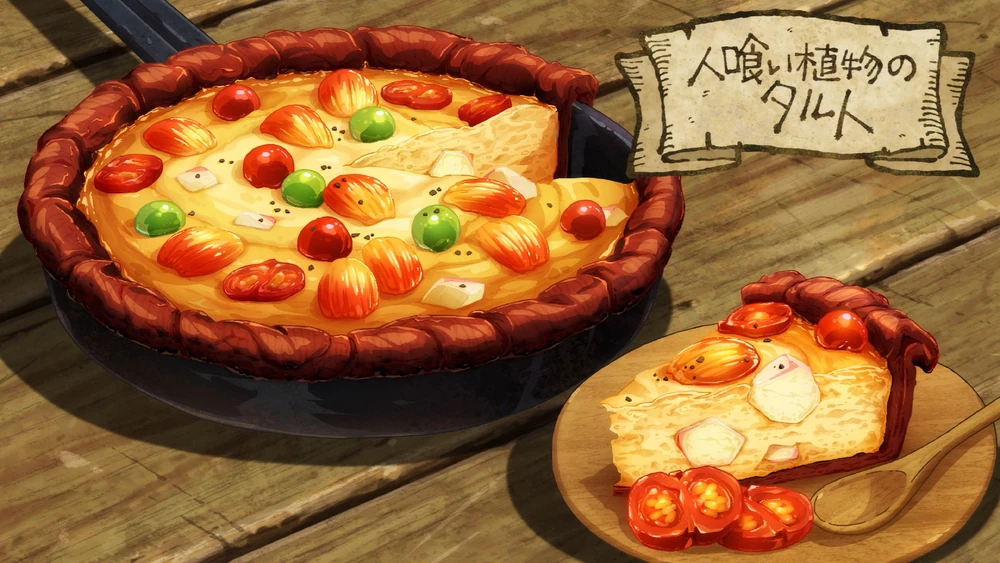

Man-Eating Plant Tart

A mixture of mashed up and cut up Man-Eating Plant fruit, slime and scorpion soup is poured into a pan lined with
the flattened peel of the fruit and cooked before garnishing with some more fruit.
Ingredients
(serves 3-4)
- Leftover scorpion broth (you can use another broth if you want) (200 ml)
- Slime gelatin (80 grams)
- Baraselia (3 med. size)
- Meeroak (5 or 6 med. size)
- Betan (3 med. size)
- Salt (to taste)
- Pepper (a little)
Directions
- First, steam the fruits lightly, cut a circle under the stalk twist a bit and pull it out.
- Hit the peeled skin from the fruit to soften it up, then line a frying pan with it.
- Mash up the unripe fruit, and add some slime and scorpion soup
- Stir until it thickens it up and it's smooth.
- Add the rest of the scorpion soup and some roughly chopped fruit and mix it a bit.
- Put it into the frying pan and let it heat up.
- Once the surface begins tu bubble garnish it with the last of the fruit.
- Finished!